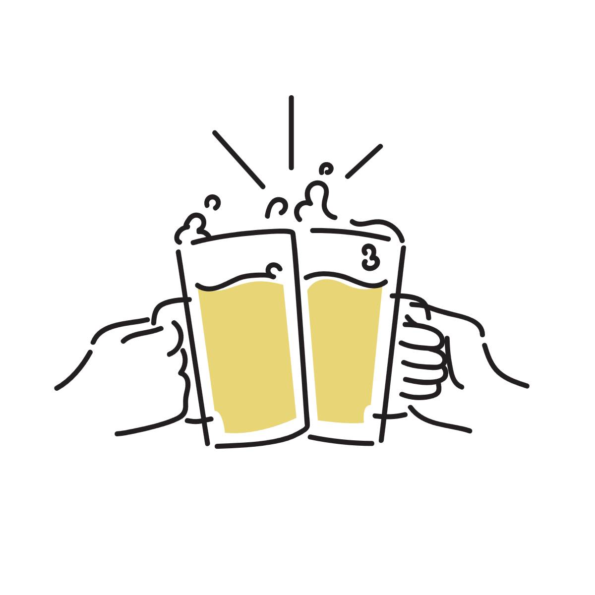
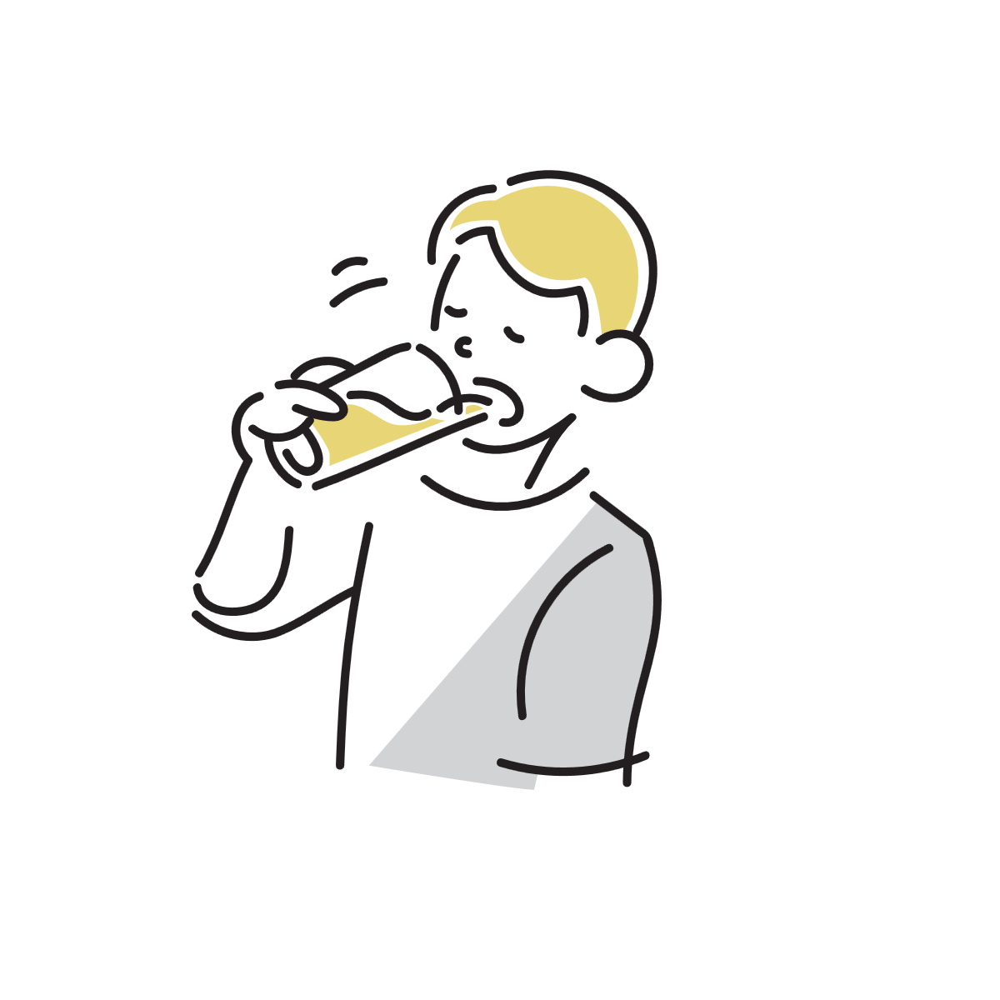
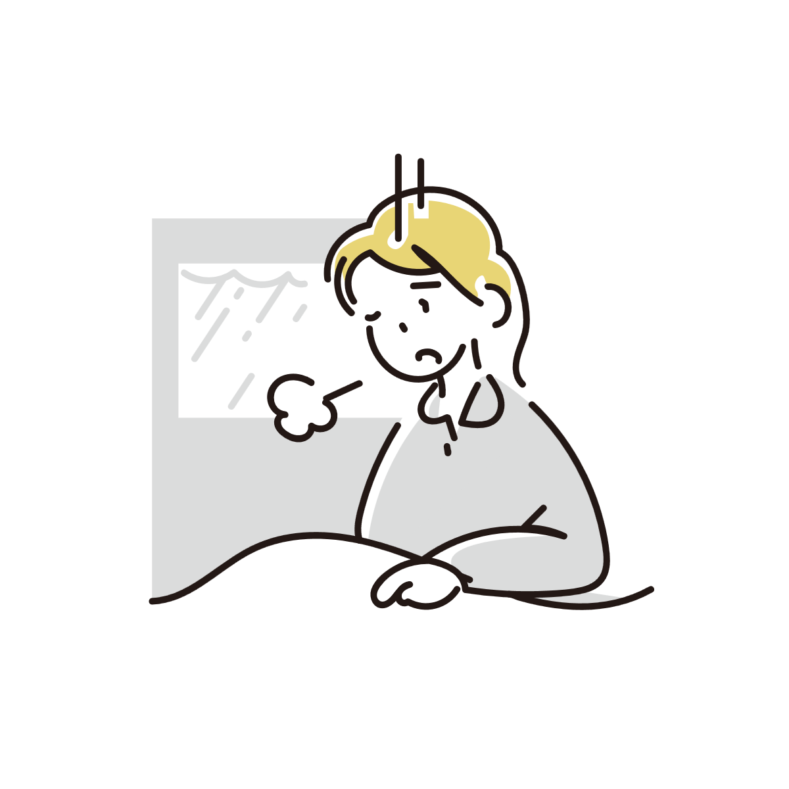
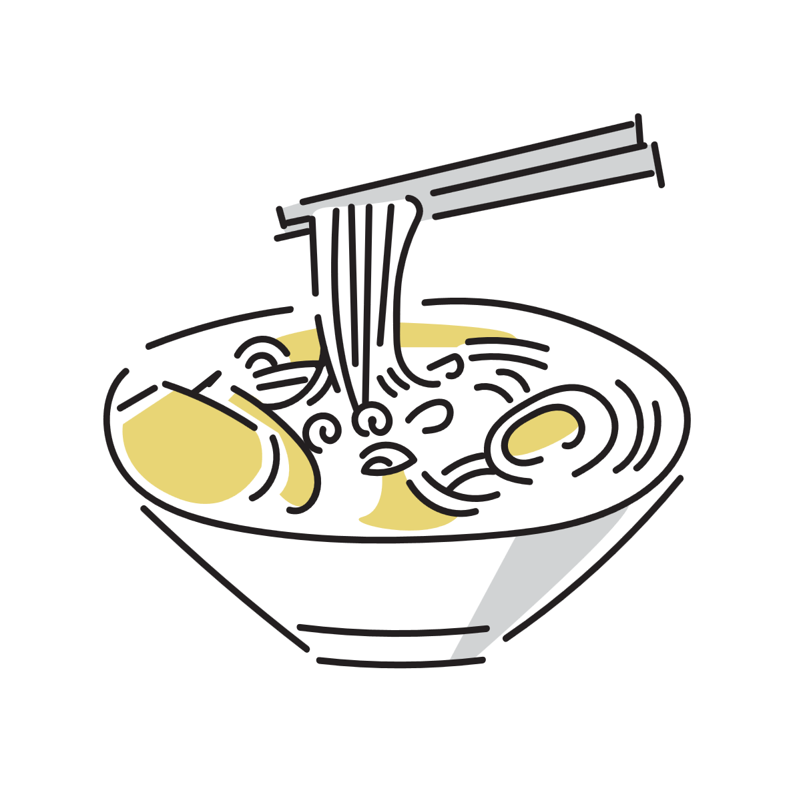

お酒を飲んだ後、水を飲むと楽になるのは本当か
お酒を飲んだあと、妙に水がおいしく感じることがあります。
寝る前に冷たい水を探したり、翌朝に一気に飲みたくなったり。 実際、水を飲むと少し楽になったように感じることもあります。
昔から、 「飲んだあとに水を飲んで寝ると二日酔いしにくい」 と言われることもあります。
ではこれは本当に、 水が酔いに効いているのでしょうか。

酔うと体はどうなるのか
お酒に含まれるアルコールは、 胃や小腸から吸収され、 血液を通って全身へ運ばれます。
アルコールは脳にも届くため、 飲みすぎると判断力や感覚が少しずつ変化していきます。
気分だけではなく、脳の変化でもある
酔うと気分が大きくなったり、 眠くなったり、 同じ話を繰り返したりすることがあります。
これは単なる気持ちの問題というより、 脳がアルコールの影響を受けている状態です。
「酔い」はかなり感覚的なものに見えますが、 実際には体の反応でもあります。
アルコールは少しずつ分解される
体に入ったアルコールは、 主に肝臓で分解されます。
ただし、 この処理には時間がかかります。
そのため、 酔いを一瞬で消すような方法は基本的にはなく、 少しずつ抜けていくのを待つしかありません。
水を飲むと何が変わるのか
お酒を飲むと、 トイレが近くなることがあります。
これはアルコールに利尿作用があるためで、 飲酒中は体の水分が失われやすくなります。
のどの渇きや頭痛につながることがある
飲んだあとに、 のどが渇いたり、 頭が重く感じたり、 体がだるくなったりすることがあります。
こうした不快感には、 脱水が関係している場合があります。
そこで水を飲むと、 不足していた水分が補われるため、 体が少し落ち着きやすくなります。
「水を飲むと楽になる」という感覚は、 かなり自然な反応です。
「水でアルコールを薄める」は少し違う
昔から、 「水を飲めばアルコールが薄まる」 と言われることがあります。
たしかに飲んだ直後は、 そういう感覚になることがあります。
ただ、 すでに吸収されたアルコールは血液中を巡っているため、 水を飲んだからといって酔いそのものが急に消えるわけではありません。
水はアルコールを直接打ち消しているというより、 飲酒による脱水や乾燥をやわらげている部分が大きいです。
水だけで二日酔いを防げるわけではない
「寝る前にたくさん水を飲めば二日酔いにならない」 と言われることがありますが、 実際には、 水分摂取と二日酔いの強さに明確な関係は見つからなかったとする研究もあります。
二日酔いには脱水だけでなく、 アルコールの分解過程や睡眠の質など、 いくつもの要素が関係しています。
そのため、 水だけで完全に防げるわけではありません。
ただ、 水分不足による不快感を軽くする意味では、 水を飲むことにはちゃんと意味があります。

チェイサーに意味はあるのか
ウイスキーなどを飲むときに、 水を一緒に飲むことがあります。
いわゆるチェイサーです。
飲みすぎを防ぎやすくなる
途中で水を挟むと、 自然に飲むペースがゆるやかになります。
その結果、 一気に酔いが回りにくくなったり、 脱水を防ぎやすくなったりすることがあります。
もちろん、 チェイサーだけで酔いが消えるわけではありません。
ただ、 体への負担を増やしすぎないという意味では、 かなり理にかなった習慣です。

なぜ味噌汁やラーメンが欲しくなるのか
お酒を飲んだあと、 味噌汁やラーメンが妙においしく感じることがあります。
飲み会帰りに汁物が欲しくなる人も少なくありません。
水分だけでなく塩分も関係している
お酒を飲むと、 水分だけでなく塩分も失われやすくなります。
そのため、 塩気のある温かいものを体が欲しやすくなることがあります。
温かいものは落ち着きやすい
温かい汁物には、 体をゆるめるような感覚もあります。
冷たい水とはまた別の意味で、 「少し楽になる感じ」 があるのかもしれません。
もちろん、 深夜のラーメンが健康に良いという話ではありません。
ただ、 飲んだあとに欲しくなるのには、 それなりに理由があるとも考えられています。

酔い覚ましに本当に効くものはあるのか
「これを飲めばすぐ酔いが覚める」 という、 魔法のような方法は基本的にはありません。
コーヒーを飲んだり、 冷たい風に当たったりすると、 一時的に頭がはっきりしたように感じることはあります。
ただ、 それでアルコールが急になくなるわけではありません。
結局はかなり普通のものが大事
実際に重要なのは、 時間をかけて休むことや、 水分をとること、 しっかり眠ることです。
特別な方法というより、 かなり基本的な回復のほうが大切です。
だからこそ、 お酒を飲んだあとに水を欲しくなるのは、 不思議なことではないのかもしれません。
参考情報と注意点
強い吐き気や意識障害などがある場合は、 単なる酔いではなく急性アルコール中毒などの可能性もあります。 無理をせず、 必要に応じて医療機関への相談も検討してください。
関連アイテム
 | い・ろ・は・す 天然水 PET ラベルレス(1箱24本入(1本560ml))【2shdrk】【いろはす(I LOHAS)】[水 ミネラルウォーター] 価格:2280円 |